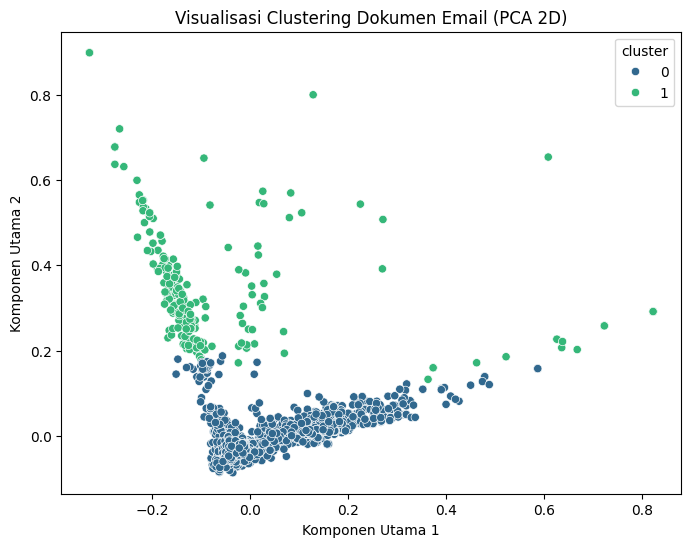

8. UTS 2#
2. Lakukan analisa clutering dokumen pada data email berikut#
import pandas as pd
import matplotlib.pyplot as plt
from sklearn.feature_extraction.text import TfidfVectorizer
from sklearn.cluster import KMeans
from sklearn.decomposition import PCA
import seaborn as sns
import re
import nltk
---------------------------------------------------------------------------
ModuleNotFoundError Traceback (most recent call last)
Cell In[1], line 6
4 from sklearn.cluster import KMeans
5 from sklearn.decomposition import PCA
----> 6 import seaborn as sns
7 import re
8 import nltk
ModuleNotFoundError: No module named 'seaborn'
nltk.download('stopwords')
from nltk.corpus import stopwords
[nltk_data] Downloading package stopwords to /root/nltk_data...
[nltk_data] Unzipping corpora/stopwords.zip.
df = pd.read_csv("spam.csv", encoding="latin-1")
print(df.head())
print(df.columns)
id Text Unnamed: 2 \
0 1 Go until jurong point, crazy.. Available only ... NaN
1 2 Ok lar... Joking wif u oni... NaN
2 3 Free entry in 2 a wkly comp to win FA Cup fina... NaN
3 4 U dun say so early hor... U c already then say... NaN
4 5 Nah I don't think he goes to usf, he lives aro... NaN
Unnamed: 3 Unnamed: 4
0 NaN NaN
1 NaN NaN
2 NaN NaN
3 NaN NaN
4 NaN NaN
Index(['id', 'Text', 'Unnamed: 2', 'Unnamed: 3', 'Unnamed: 4'], dtype='object')
df = df[['Text']].dropna()
df = df.rename(columns={'Text': 'text'})
Preprocessing
def clean_text(text):
text = str(text).lower() # ubah ke huruf kecil
text = re.sub(r'[^a-z\s]', '', text) # hapus karakter non-huruf
text = " ".join([word for word in text.split()
if word not in stopwords.words('english')]) # hapus stopwords
return text
df['clean_text'] = df['text'].apply(clean_text)
TF-IDF Vectorization
vectorizer = TfidfVectorizer(max_features=1000)
X = vectorizer.fit_transform(df['clean_text'])
k = 2 #ingin 2 cluster (spam dan non-spam)
kmeans = KMeans(n_clusters=k, random_state=42, n_init=10)
df['cluster'] = kmeans.fit_predict(X)
pca = PCA(n_components=2, random_state=42)
reduced = pca.fit_transform(X.toarray())
tujuan dari PCA(Peincipal Component Analysis) adalah mengubah data berdimensi tinggi menjadi beberapa komponen utama.
plt.figure(figsize=(8,6))
sns.scatterplot(x=reduced[:,0], y=reduced[:,1], hue=df['cluster'], palette='viridis')
plt.title("Visualisasi Clustering Dokumen Email (PCA 2D)")
plt.xlabel("Komponen Utama 1")
plt.ylabel("Komponen Utama 2")
plt.show()

analisis hasil cluster
for i in range(k):
print(f"\n🟢 Cluster {i}:")
sample_texts = df[df['cluster'] == i]['text'].sample(5, random_state=42)
for txt in sample_texts:
print("-", txt[:100], "...")
🟢 Cluster 0:
- \HEY HEY WERETHE MONKEESPEOPLE SAY WE MONKEYAROUND! HOWDY GORGEOUS ...
- Correct. So how was work today ...
- Yes.i'm in office da:) ...
- Sorry that was my uncle. I.ll keep in touch ...
- Just sing HU. I think its also important to find someone female that know the place well preferably ...
🟢 Cluster 1:
- Finish already... Yar they keep saying i mushy... I so embarrassed ok... ...
- Ok... ...
- Ok then i come n pick u at engin? ...
- Hi, wkend ok but journey terrible. Wk not good as have huge back log of marking to do ...
- Ok... Then r we meeting later? ...
menampilkan kata yang paling penting di cluster 0 dan 1
print("\n🔤 Top terms per cluster:")
terms = vectorizer.get_feature_names_out()
order_centroids = kmeans.cluster_centers_.argsort()[:, ::-1]
for i in range(k):
print(f"\nCluster {i}:")
top_terms = [terms[ind] for ind in order_centroids[i, :10]]
print(", ".join(top_terms))
🔤 Top terms per cluster:
Cluster 0:
im, call, get, ur, ltgt, dont, know, come, got, like
Cluster 1:
ok, ill, later, sorry, call, lor, meeting, go, thanx, come